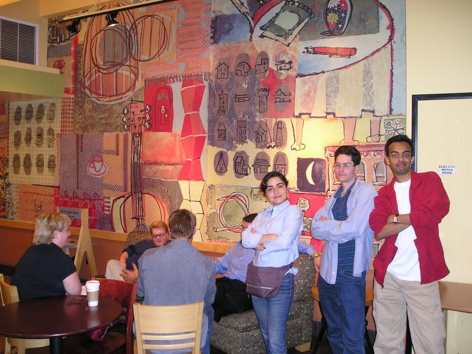

Caltech Memories -- I started my conference circuit with FCCM 2004. Immediately after that we went to DAC in San Diego. Helia, Michael and I were just beginning to know each other and have become great friends since. Helia now lives in San Diego itself with her husband who works at Qualcomm. Michael lives neaby in Art Museum, here in Philadelphia. In this picutre, Helia and I try to imitate Michael's inscrutable smirk! (San Diego, DAC June 2004)
First |
Previous Picture |
Next Picture |
Last | Thumbnails
